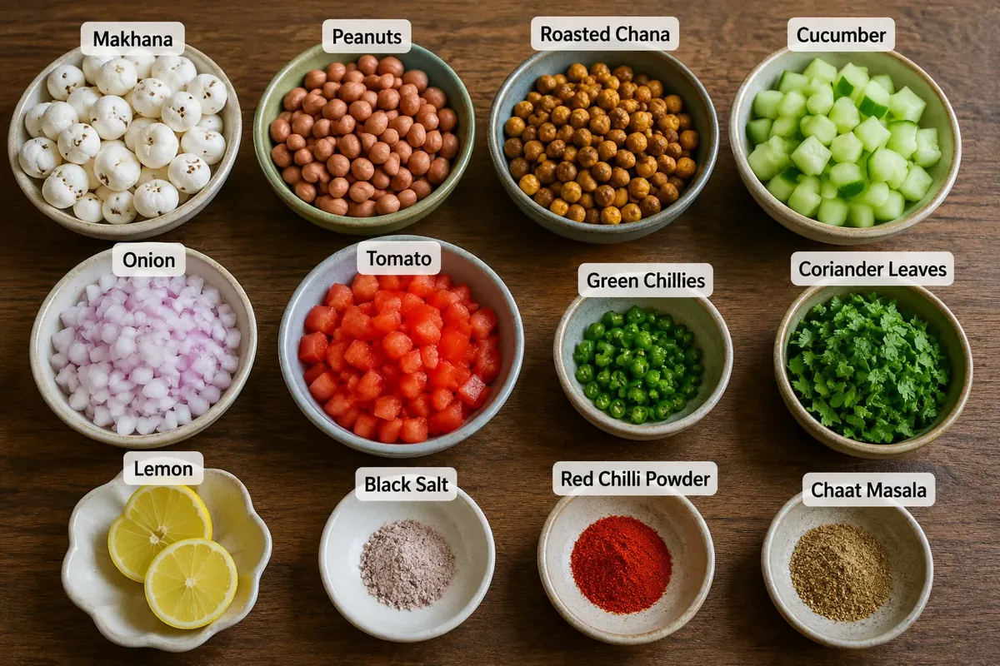
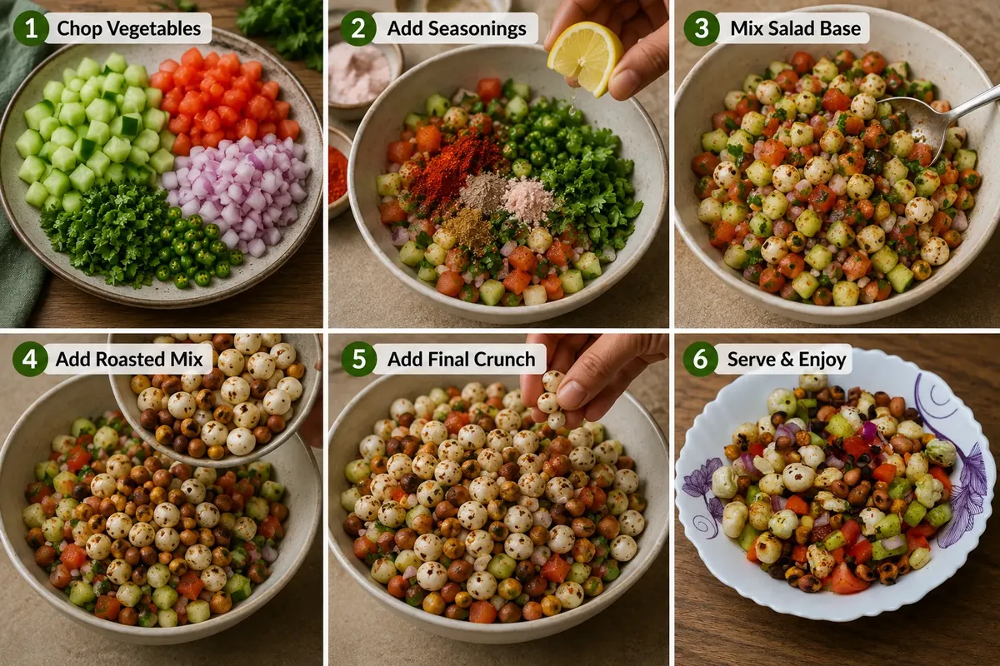

Looking for a snack that is fresh and crunchy at the same time? This Healthy Makhana Salad brings together roasted makhana, peanuts, and chana with crisp cucumber, juicy tomato, onion, fresh coriander, green chillies, and a tangy squeeze of lemon.
The best part is the contrast in textures—the vegetables keep the salad fresh and juicy, while the roasted makhana mixture adds a satisfying crunch. Ready in just 10 minutes, it works well as a quick evening snack, a light side dish, or something refreshing when you are craving chaat-style flavours without making a complicated recipe.
Ingredients

Steps
Prepare the Vegetables
Add the chopped onion, cucumber, tomato, finely chopped green chillies, and fresh coriander leaves to a mixing bowl.
Add the Seasonings
Add black salt, red chilli powder, and chaat masala. Squeeze in lemon juice according to your taste.
Mix the Salad Base
Mix everything very well so that the vegetables are evenly coated with the spices and lemon juice.
Add the Roasted Mixture
Add half of the dry-roasted makhana, peanut, and chana mixture to the prepared salad. Mix everything gently but thoroughly.
Add the Final Crunch
Keep the remaining half of the roasted makhana, peanut, and chana mixture aside. Add it on top of the salad just before serving so that it stays crunchy.
Serve and Enjoy
Your Healthy Makhana Salad is ready! Serve immediately and enjoy the combination of fresh vegetables, tangy spices, and satisfying crunch.

Quick Tip
For the best texture, add the final layer of roasted makhana, peanuts, and chana just before serving. If added too early, the makhana may absorb moisture from the vegetables and lemon juice and lose some of its crunch.